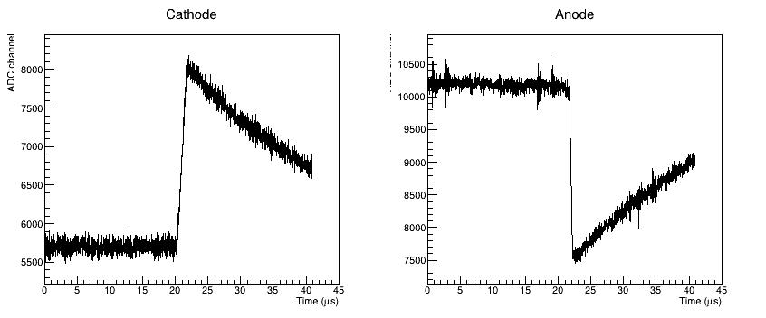
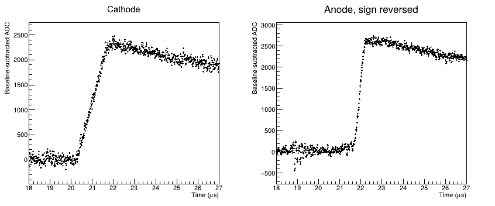
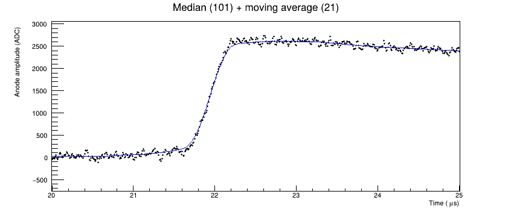
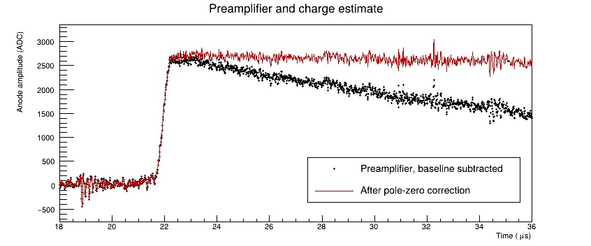
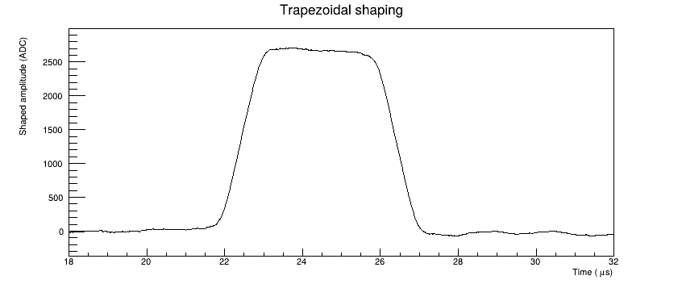
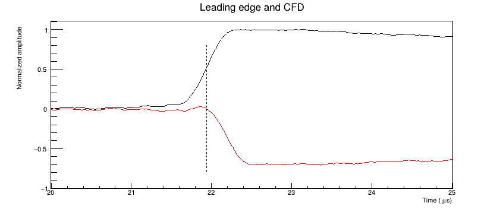
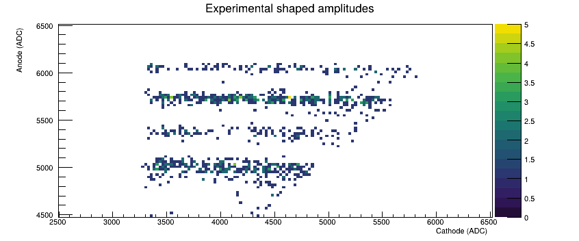
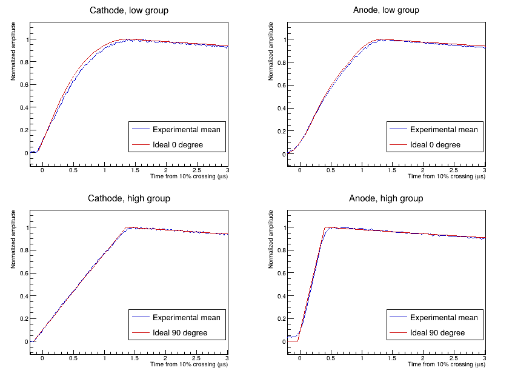

栅极电离室：实验波形、成型与物理量提取¶
PyROOT notebook · ROOT C++ notebook · ROOT macro
上一节从电离径迹得到感应电流、积分电荷和前放电压。这一节从实际记录的 ADC 波形出发，依次进行基线修正、波形观察、pole-zero correction 和梯形成型，再提取幅度、时间及阴极—阳极关联。
本例使用同一 GIC 装置的实验数据。阴极为正脉冲，阳极为负脉冲；两路每条记录均为 4096 点，采样间隔 10 ns。配套文件 gic_experiment.root 保留原 fall.root 的前 1000 条事件，未更改采样值。原文件共有 5500 条记录，数据由刘杰、崔增祺提供。网页保留完整运行结果；运行代码需要将配套数据放在 notebook 同一目录。
1. 读取原始波形¶
TTree 中 cathod[4096] 与 anode[4096] 保存同一事件的两路波形。横轴要从 sample index 换算为时间；没有电压刻度时，纵轴保留 ADC channel，不能写成 mV。
import ROOT
import numpy as np
ROOT.gStyle.SetOptStat(0)
ROOT.gStyle.SetPalette(ROOT.kViridis)
f = ROOT.TFile.Open("gic_experiment.root")
tree = f.Get("tree")
tree.Print()
print(f"Experimental events: {tree.GetEntries()}")
tree.GetEntry(0)
rawc = np.array(tree.cathod, dtype=float)
rawa = np.array(tree.anode, dtype=float)
n, dt = 4096, 0.01 # μs
t = np.arange(n, dtype=float)*dt
grc = ROOT.TGraph(n,t,rawc)
gra = ROOT.TGraph(n,t,rawa)
c = ROOT.TCanvas("exp_c","Experimental waveforms",850,380)
c.Divide(2,1)
c.cd(1)
grc.SetTitle("Cathode;Time (#mus);ADC channel")
grc.Draw("AL")
c.cd(2)
gra.SetTitle("Anode;Time (#mus);ADC channel")
gra.Draw("AL")
c.Draw()gStyle->SetOptStat(0);
gStyle->SetPalette(kViridis);
auto f=TFile::Open("gic_experiment.root");
auto tree=f->Get<TTree>("tree");
tree->Print();
std::cout << "Experimental events: " << tree->GetEntries() << "\n";
const int n=4096;
float rawc[n], rawa[n];
tree->SetBranchAddress("cathod",rawc); tree->SetBranchAddress("anode",rawa);
tree->GetEntry(0);
double dt=.01, t[n];
auto grc=new TGraph(); auto gra=new TGraph();
for (int k=0; k<n; ++k) {
t[k]=k*dt;
grc->SetPoint(k,t[k],rawc[k]); gra->SetPoint(k,t[k],rawa[k]);
}
auto c=new TCanvas("exp_c","Experimental waveforms",850,380);
c->Divide(2,1); c->cd(1);
grc->SetTitle("Cathode;Time (#mus);ADC channel"); grc->Draw("AL");
c->cd(2); gra->SetTitle("Anode;Time (#mus);ADC channel"); gra->Draw("AL");
c->Draw();Experimental events: 1000 ****************************************************************************** *Tree :tree : tree * *Entries : 1000 : Total = 32953980 bytes File Size = 15834568 * * : : Tree compression factor = 2.08 * ****************************************************************************** *Br 0 :cathod : cathod[4096]/F * *Entries : 1000 : Total Size= 16477321 bytes File Size = 7888608 * *Baskets : 1000 : Basket Size= 32000 bytes Compression= 2.09 * *............................................................................* *Br 1 :anode : anode[4096]/F * *Entries : 1000 : Total Size= 16476317 bytes File Size = 7930225 * *Baskets : 1000 : Basket Size= 32000 bytes Compression= 2.08 * *............................................................................*

2. 基线修正与波形观察¶
脉冲前的稳定部分给出基线 $b$，修正后 $y_k=x_k-b$。先看原始图，确认所选区间中没有信号；本例取前 1500 点。阳极再反号，后面两路都按正脉冲处理。基线的逐事件变化会直接影响幅度和长时间积分。
bc, ba = rawc[:1500].mean(), rawa[:1500].mean()
yc, ya = rawc-bc, ba-rawa
print(f"Baseline: cathode = {bc:.2f}, anode = {ba:.2f} ADC")
print(f"Baseline RMS: cathode = {yc[:1500].std():.2f}, anode = {ya[:1500].std():.2f} ADC")
gc = ROOT.TGraph(n,t,yc)
ga = ROOT.TGraph(n,t,ya)
c.Clear()
c.Divide(2,1)
for panel, graph, name in [(1,gc,"Cathode"),(2,ga,"Anode, sign reversed")]:
c.cd(panel)
graph.SetTitle(name+";Time (#mus);Baseline-subtracted ADC")
graph.SetMarkerStyle(6)
graph.Draw("AP") # 点不连线，保留采样点与噪声的观感
graph.GetXaxis().SetRangeUser(18,27)
c.Draw()double bc=0,ba=0,yc[n],ya[n],varc=0,vara=0;
for (int k=0; k<1500; ++k) {bc+=rawc[k]/1500.0; ba+=rawa[k]/1500.0;}
for (int k=0; k<n; ++k) {yc[k]=rawc[k]-bc; ya[k]=ba-rawa[k];}
for (int k=0; k<1500; ++k) {varc+=yc[k]*yc[k]/1500; vara+=ya[k]*ya[k]/1500;}
std::cout << "Baseline: cathode = " << bc << ", anode = " << ba << " ADC\n"
<< "Baseline RMS: cathode = " << std::sqrt(varc)
<< ", anode = " << std::sqrt(vara) << " ADC\n";
auto gc=new TGraph(n,t,yc); auto ga=new TGraph(n,t,ya);
c->Clear(); c->Divide(2,1);
TGraph* baselineGraphs[2]={gc,ga};
const char* names[2]={"Cathode","Anode, sign reversed"};
for (int j=0; j<2; ++j) {
c->cd(j+1);
baselineGraphs[j]->SetTitle(Form("%s;Time (#mus);Baseline-subtracted ADC",names[j]));
baselineGraphs[j]->SetMarkerStyle(6); baselineGraphs[j]->Draw("AP");
baselineGraphs[j]->GetXaxis()->SetRangeUser(18,27);
}
c->Draw();Baseline: cathode = 5702.13, anode = 10192.31 ADC Baseline RMS: cathode = 68.48, anode = 74.91 ADC

median filter 与 moving average¶
原实例用 median filter 抑制孤立尖峰，再用 moving average 平滑波形。下面保留这个例子：101 点 median 对应 1.01 μs，随后 21 点平均对应 0.21 μs。窗口已经接近脉冲的上升时间，因此除了降噪，也会改变波形细节。median filter 是非线性处理，不能据此认为电荷仍然严格守恒。
median = ya.copy()
for k in range(50,n-50):
median[k] = np.median(ya[k-50:k+51])
smooth = median.copy()
for k in range(10,n-10):
smooth[k] = median[k-10:k+11].mean()
gs = ROOT.TGraph(n,t,smooth)
c.Clear()
ga.SetTitle("Median (101) + moving average (21);Time (#mus);Anode amplitude (ADC)")
ga.Draw("AP")
ga.GetXaxis().SetRangeUser(20,25)
gs.SetLineColor(ROOT.kBlue+1)
gs.Draw("L SAME")
c.Draw()double median[n],smooth[n],window[101];
std::copy(ya,ya+n,median);
for (int k=50; k<n-50; ++k) {
std::copy(ya+k-50,ya+k+51,window);
std::sort(window,window+101);
median[k]=window[50];
}
std::copy(median,median+n,smooth);
for (int k=10; k<n-10; ++k)
smooth[k]=std::accumulate(median+k-10,median+k+11,0.0)/21;
auto gs=new TGraph(n,t,smooth);
c->Clear();
ga->SetTitle("Median (101) + moving average (21);Time (#mus);Anode amplitude (ADC)");
ga->Draw("AP"); ga->GetXaxis()->SetRangeUser(20,25);
gs->SetLineColor(kBlue+1); gs->Draw("L SAME"); c->Draw();
3. 从前放电压到电荷估计¶
由前放响应可得 $\mathrm du/\mathrm dt+u/\tau=i$，因此
$$Q(t)=u(t)+\frac1\tau\int_0^t u(t')\,\mathrm dt'.$$
对基线修正后的电压做同样处理，得到与电荷成正比的量。下面直接用原始的 ya，不经过上面的 median filter。取 $\tau=27$ μs；在实际测量中，可用无 pile-up 脉冲的衰减尾部检查这个时间常数。修正后若有系统性的上斜或下斜，应先检查基线和 $\tau$。
tau = 27.0
q = ya + dt/tau*np.cumsum(ya) # pole-zero correction，矩形积分近似
gq = ROOT.TGraph(n,t,q)
c.Clear()
ga.SetTitle("Preamplifier and charge estimate;Time (#mus);Anode amplitude (ADC)")
ga.Draw("AP")
ga.GetXaxis().SetRangeUser(18,36)
ga.SetMaximum(1.1*max(q))
gq.SetLineColor(ROOT.kRed+1)
gq.Draw("L SAME")
leg = ROOT.TLegend(.52,.18,.88,.36)
leg.AddEntry(ga,"Preamplifier, baseline subtracted","p")
leg.AddEntry(gq,"After pole-zero correction","l")
leg.Draw()
c.Draw()double tau=27.0,q[n],integral=0;
for (int k=0; k<n; ++k) {integral+=ya[k]*dt; q[k]=ya[k]+integral/tau;}
auto gq=new TGraph(n,t,q);
c->Clear();
ga->SetTitle("Preamplifier and charge estimate;Time (#mus);Anode amplitude (ADC)");
ga->Draw("AP"); ga->GetXaxis()->SetRangeUser(18,36);
ga->SetMaximum(1.1*(*std::max_element(q,q+n)));
gq->SetLineColor(kRed+1); gq->Draw("L SAME");
auto leg=new TLegend(.52,.18,.88,.36);
leg->AddEntry(ga,"Preamplifier, baseline subtracted","p");
leg->AddEntry(gq,"After pole-zero correction","l"); leg->Draw(); c->Draw();
这一步去除了理想前放的指数衰减，没有把噪声消除；长时间累积还会放大基线偏差。测量电荷时，通常再用有限时间长度的成型滤波器。
4. 梯形成型与幅度提取¶
对电荷阶跃 $q_k$ 分别取两段等长的滑动平均，再作差：
$$m_k=\frac1L\sum_{j=0}^{L-1}q_{k-j},\qquad h_k=m_k-m_{k-L-G}.$$
瞬时电荷输入会得到梯形：上升段和下降段各长 $L\Delta t$，中间 flat top 长 $G\Delta t$。有限电荷收集时间会缩短可用的平台，所以本例取 $L\Delta t=1$ μs、$G\Delta t=3$ μs，给 GIC 的电荷收集留出时间。平台幅度对应收集电荷，而不再直接依赖前放峰顶。
L, G = 100, 300 # samples；1 μs 与 3 μs
m = np.convolve(q,np.ones(L)/L,mode="full")[:n]
shaped = m.copy()
shaped[L+G:] -= m[:n-L-G]
gh = ROOT.TGraph(n,t,shaped)
c.Clear()
gh.SetTitle("Trapezoidal shaping;Time (#mus);Shaped amplitude (ADC)")
gh.Draw("AL")
gh.GetXaxis().SetRangeUser(18,32)
c.Draw()
peak_index = 2200 + np.argmax(shaped[2200:3000])
amplitude = shaped[peak_index-10:peak_index+11].mean()
print(f"Shaped anode amplitude = {amplitude:.1f} ADC")const int L=100,G=300;
double m[n],shaped[n],running=0;
for (int k=0; k<n; ++k) {
running+=q[k];
if (k>=L) running-=q[k-L];
m[k]=running/L;
shaped[k]=m[k];
if (k>=L+G) shaped[k]-=m[k-L-G];
}
auto gh=new TGraph(n,t,shaped);
c->Clear();
gh->SetTitle("Trapezoidal shaping;Time (#mus);Shaped amplitude (ADC)");
gh->Draw("AL"); gh->GetXaxis()->SetRangeUser(18,32); c->Draw();
int peak_index=std::max_element(shaped+2200,shaped+3000)-shaped;
double amplitude=std::accumulate(shaped+peak_index-10,shaped+peak_index+11,0.0)/21;
std::cout << "Shaped anode amplitude = " << amplitude << " ADC\n";Shaped anode amplitude = 2705.2 ADC

先看平台是否覆盖完整收集过程，再在平台上取平均。本例在搜索到的平台高点附近取 21 点平均；用于精密测量时，可用触发位置定义固定的读出区间，减少从噪声中选最大值造成的偏差。改变 $L$ 可比较噪声与成型时间的取舍；$G$ 太短时，长上升时间脉冲仍会出现 ballistic deficit。
5. 时间信息：上升时间与 CFD¶
幅度测量与时间测量使用同一条波形，但可以采用不同滤波。下面只用 21 点 moving average 稳定前沿。定义 $t_{10}$、$t_{90}$ 为前沿达到峰值 10%、90% 的时刻，上升时间为 $t_{90}-t_{10}$。
CFD 将一个延迟信号与一个衰减信号相减：
$$c_k=f y_k-y_{k-d_t}.$$
在正确的前沿上取零交叉作为时间标记。对于形状相同、幅度不同的脉冲，整体幅度因子不会改变零交叉；但 GIC 的形状随径迹方向变化，因此 CFD 时间也不能直接当成粒子的产生时刻。
timing = np.convolve(ya,np.ones(21)/21,mode="same")
imax = 1900+np.argmax(timing[1900:2600])
height = timing[imax]
crossings = []
for fraction in [0.1,0.9]:
k = 1900+np.where(timing[1900:imax+1] >= fraction*height)[0][0]
crossing = t[k-1]+dt*(fraction*height-timing[k-1])/(timing[k]-timing[k-1])
crossings.append(crossing)
t10,t90 = crossings
delay,fraction = 20,0.3 # 0.2 μs 延迟，衰减系数 0.3
cfd = fraction*timing.copy()
cfd[delay:] -= timing[:-delay]
start = max(1900,int(t10/dt))
stop = imax+delay
k = next(k for k in range(start,stop) if cfd[k]>0 and cfd[k+1]<=0)
tcfd = t[k]+dt*cfd[k]/(cfd[k]-cfd[k+1])
print(f"t10 = {t10:.3f}; t90 = {t90:.3f}; rise time = {t90-t10:.3f} μs")
print(f"CFD crossing = {tcfd:.3f} μs, relative to record start")
gt = ROOT.TGraph(n,t,timing/height)
gf = ROOT.TGraph(n,t,cfd/height)
c.Clear()
gt.SetTitle("Leading edge and CFD;Time (#mus);Normalized amplitude")
gt.Draw("AL")
gt.GetXaxis().SetRangeUser(20,25)
gt.SetMinimum(-1)
gf.SetLineColor(ROOT.kRed+1)
gf.Draw("L SAME")
mark = ROOT.TLine(tcfd,-.8,tcfd,.8)
mark.SetLineStyle(2)
mark.Draw()
c.Draw()double timing[n]={0},cfd[n]={0},normal[n],cfNormal[n];
for (int k=10; k<n-10; ++k)
timing[k]=std::accumulate(ya+k-10,ya+k+11,0.0)/21;
int imax=std::max_element(timing+1900,timing+2600)-timing;
double height=timing[imax],crossings[2];
for (int j=0; j<2; ++j) {
double threshold=(j==0 ? .1 : .9)*height;
int k=1900;
while (k<imax && timing[k]<threshold) ++k;
crossings[j]=t[k-1]+dt*(threshold-timing[k-1])/(timing[k]-timing[k-1]);
}
double t10=crossings[0],t90=crossings[1],fraction=.3;
int delay=20;
for (int k=0; k<n; ++k) {
cfd[k]=fraction*timing[k]; if (k>=delay) cfd[k]-=timing[k-delay];
normal[k]=timing[k]/height; cfNormal[k]=cfd[k]/height;
}
int k=std::max(1900,int(t10/dt));
while (k<imax+delay && !(cfd[k]>0 && cfd[k+1]<=0)) ++k;
if (k==imax+delay) throw std::runtime_error("No CFD crossing on leading edge");
double tcfd=t[k]+dt*cfd[k]/(cfd[k]-cfd[k+1]);
std::cout << "t10 = " << t10 << "; t90 = " << t90 << "; rise time = " << t90-t10
<< " us\nCFD crossing = " << tcfd << " us, relative to record start\n";
auto gt=new TGraph(n,t,normal); auto gf=new TGraph(n,t,cfNormal);
c->Clear(); gt->SetTitle("Leading edge and CFD;Time (#mus);Normalized amplitude");
gt->Draw("AL"); gt->GetXaxis()->SetRangeUser(20,25); gt->SetMinimum(-1);
gf->SetLineColor(kRed+1); gf->Draw("L SAME");
auto mark=new TLine(tcfd,-.8,tcfd,.8); mark->SetLineStyle(2); mark->Draw(); c->Draw();t10 = 21.690; t90 = 22.139; rise time = 0.449 μs CFD crossing = 21.934 μs, relative to record start

黑线是归一化的前沿，红线是 CFD 输出，虚线标出所选零交叉。
记录起点是采集系统给出的，不是电离发生时刻；上升时间也不是电子的全部漂移时间。若要由 $v_{\rm cg}=D/T_d$ 测漂移速度，应识别从电离开始到最晚电子到栅的时间 $T_d$。阴极波形及其差分可共同帮助确定这些特征，具体方法参见文献 [2]。不能直接把上面的 $t_{90}-t_{10}$ 代入。
Scope8 分别处理探测器电流、前放、采样、能量成型和定时；GIC 的两路定时还可利用阴极二次差分与阳极一次差分的边缘特征。不同定时算法的时间基准要单独确认，能量谱不应默认只保留定时成功的事件。
6. 逐事件提取与二维关联¶
把上面的基线修正、pole-zero correction 和梯形成型用于每个事件，保存阴极、阳极的成型幅度。这里不加能量或时间 cut，先看全部事件的关联。
observables = []
for event in tree:
amplitudes = []
for branch,sign in [(event.cathod,1),(event.anode,-1)]:
y = np.array(branch,dtype=float)
y = sign*(y-y[:1500].mean())
charge = y+dt/tau*np.cumsum(y)
mean = np.convolve(charge,np.ones(L)/L,mode="full")[:n]
h = mean.copy()
h[L+G:] -= mean[:n-L-G]
peak = 2200+np.argmax(h[2200:3000])
amplitudes.append(h[peak-10:peak+11].mean())
observables.append(amplitudes)
observables = np.array(observables)
c.Clear()
c.SetRightMargin(.15)
hca = ROOT.TH2D("hca","Experimental shaped amplitudes;Cathode (ADC);Anode (ADC)",300,1000,9000,350,1000,10500)
for ac,aa in observables:
hca.Fill(ac,aa)
hca.Draw("COLZ")
hca.GetXaxis().SetRangeUser(2500,6500)
hca.GetYaxis().SetRangeUser(4500,6500)
c.Draw()
np.savetxt("gic_amplitudes.txt",observables,header="cathode_ADC anode_ADC")
print(f"Processed {len(observables)} events; saved gic_amplitudes.txt")std::vector<double> ac,aa;
for (int event=0; event<tree->GetEntries(); ++event) {
tree->GetEntry(event);
double values[2];
for (int channel=0; channel<2; ++channel) {
float* raw=(channel==0 ? rawc : rawa);
double sign=(channel==0 ? 1 : -1),base=0,total=0,run=0;
double charge[n],mean[n],h[n];
for (int k=0; k<1500; ++k) base+=raw[k]/1500.0;
for (int k=0; k<n; ++k) {
double y=sign*(raw[k]-base);
total+=y; charge[k]=y+dt/tau*total;
run+=charge[k]; if (k>=L) run-=charge[k-L];
mean[k]=run/L; h[k]=mean[k];
if (k>=L+G) h[k]-=mean[k-L-G];
}
int peak=std::max_element(h+2200,h+3000)-h;
values[channel]=std::accumulate(h+peak-10,h+peak+11,0.0)/21;
}
ac.push_back(values[0]); aa.push_back(values[1]);
}
c->Clear(); c->SetRightMargin(.15);
auto hca=new TH2D("hca","Experimental shaped amplitudes;Cathode (ADC);Anode (ADC)",300,1000,9000,350,1000,10500);
std::ofstream results("gic_amplitudes.txt");
results << std::setprecision(17);
for (int j=0; j<(int)ac.size(); ++j) {hca->Fill(ac[j],aa[j]); results << ac[j] << " " << aa[j] << "\n";}
results.close(); hca->Draw("COLZ");
hca->GetXaxis()->SetRangeUser(2500,6500); hca->GetYaxis()->SetRangeUser(4500,6500);
c->Draw();
std::cout << "Processed " << ac.size() << " events; saved gic_amplitudes.txt\n";Processed 1000 events; saved gic_amplitudes.txt

图中放大了四组 α 带所在区域，直方图仍填入全部 1000 个事件。阳极幅度大致分为几组，阴极幅度在每组内变化，正是上一节所解释的能量—角度信息分离。实验条带有宽度、斜率和少量离群点；对比理想图时，应区分电荷输运、电子学响应与事件选择的影响。
从成型幅度到物理量¶
用标准 α 能量确定阳极的能量刻度，例如 $E=a_a+b_a A_a$。刻度的是经过同一套处理得到的成型幅度，不能直接沿用前放峰高的系数；拟合方法可参考标准源刻度实例。
阴极与阳极的增益分别刻度后，可将幅度换成上一节的 $Q_c$、$Q_a$。理想关系给出
$$\cos\theta=\frac{D}{\bar s(E)}\left(1-\frac{Q_c}{Q_a}\right),\qquad E=Q_a.$$
这里 $\bar s(E)$ 来自对应能量的电离分布。没有两路刻度或附着、栅极效率的修正时，原始幅度比只能作为角度代理，不能直接报告精确角度。
7. 实验与模拟波形比较¶
在最高能量 α 带附近取相近阳极幅度，再选择阴极幅度较低和较高的两组事件。它们分别偏向沿漂移方向和近似平行阴极的径迹，但都有有限的角度展宽。窗口从上面的实验图中选择，不是逐事件角度真值。
ac,aa = observables[:,0],observables[:,1]
low = (aa>5900)&(aa<6200)&(ac>3000)&(ac<3700)
high = (aa>5900)&(aa<6200)&(ac>5500)&(ac<6200)
groups = [np.where(low)[0],np.where(high)[0]]
print(f"Low cathode group: {len(groups[0])}; high cathode group: {len(groups[1])}")
averages = []
for indices in groups:
if len(indices)==0:
raise ValueError("Empty selection: inspect the amplitude plot")
total_c,total_a = np.zeros(n),np.zeros(n)
for index in indices:
tree.GetEntry(int(index))
xc,xa = np.array(tree.cathod,dtype=float),np.array(tree.anode,dtype=float)
total_c += xc-xc[:1500].mean()
total_a += xa[:1500].mean()-xa
averages.extend([total_c/len(indices),total_a/len(indices)])std::vector<int> low,high;
for (int j=0; j<(int)ac.size(); ++j) {
if (aa[j]>5900 && aa[j]<6200 && ac[j]>3000 && ac[j]<3700) low.push_back(j);
if (aa[j]>5900 && aa[j]<6200 && ac[j]>5500 && ac[j]<6200) high.push_back(j);
}
std::cout << "Low cathode group: " << low.size() << "; high cathode group: " << high.size() << "\n";
double averages[4][n]={0};
for (int group=0; group<2; ++group) {
const std::vector<int>& indices=(group==0 ? low : high);
if (indices.empty()) throw std::runtime_error("Empty amplitude selection");
for (int index : indices) {
tree->GetEntry(index);
double bc=0,ba=0;
for (int k=0; k<1500; ++k) {bc+=rawc[k]/1500.0; ba+=rawa[k]/1500.0;}
for (int k=0; k<n; ++k) {
averages[2*group][k]+=(rawc[k]-bc)/indices.size();
averages[2*group+1][k]+=(ba-rawa[k])/indices.size();
}
}
}Low cathode group: 17; high cathode group: 10
比较前统一极性，再用各自前沿的 10% 位置对齐、峰值归一化。这样看的是波形形状，不是绝对增益。这里直接平均原始波形，再找对齐点，不使用强平滑；采集触发的抖动仍可能使平均前沿展宽。
templates = np.loadtxt("gic_templates.txt") # 上一节生成：t, uc0, ua0, uc90, ua90
c.Clear()
c.SetCanvasSize(850,620)
c.Divide(2,2)
compare_graphs,compare_legends = [],[]
titles=["Cathode, low group","Anode, low group","Cathode, high group","Anode, high group"]
for panel in range(4):
c.cd(panel+1)
exp = averages[panel]
peak = 1900+np.argmax(exp[1900:2600])
k = 1900+np.where(exp[1900:peak+1]>.1*exp[peak])[0][0]
t0 = t[k-1]+dt*(.1*exp[peak]-exp[k-1])/(exp[k]-exp[k-1])
sim = templates[:,panel+1].copy()
ts = templates[:,0].copy()
ks = np.where(sim>.1*max(sim))[0][0]
ts0 = ts[ks-1]+dt*(.1*max(sim)-sim[ks-1])/(sim[ks]-sim[ks-1])
ge = ROOT.TGraph(n,t-t0,exp/exp[peak])
gm = ROOT.TGraph(len(ts),ts-ts0,sim/max(sim))
ge.SetTitle(titles[panel]+";Time from 10% crossing (#mus);Normalized amplitude")
ge.SetLineColor(ROOT.kBlue+1)
gm.SetLineColor(ROOT.kRed+1)
ge.Draw("AL")
ge.GetXaxis().SetRangeUser(-.2,3)
ge.SetMaximum(1.15)
gm.Draw("L SAME")
lg=ROOT.TLegend(.5,.18,.89,.35)
lg.AddEntry(ge,"Experimental mean","l")
lg.AddEntry(gm,"Ideal 0 degree" if panel<2 else "Ideal 90 degree","l")
lg.Draw()
compare_graphs.extend([ge,gm])
compare_legends.append(lg)
c.Draw()std::ifstream input("gic_templates.txt");
std::vector<double> ts,sim[4];
double time,value[4];
while (input >> time >> value[0] >> value[1] >> value[2] >> value[3]) {
ts.push_back(time);
for (int j=0; j<4; ++j) sim[j].push_back(value[j]);
}
if (ts.empty()) throw std::runtime_error("Run GIC_simulation first");
c->Clear(); c->SetCanvasSize(850,620); c->Divide(2,2);
const char* titles[4]={"Cathode, low group","Anode, low group","Cathode, high group","Anode, high group"};
for (int panel=0; panel<4; ++panel) {
c->cd(panel+1);
double* exp=averages[panel];
int peak=std::max_element(exp+1900,exp+2600)-exp;
int k=1900; while (exp[k]<=.1*exp[peak]) ++k;
double t0=t[k-1]+dt*(.1*exp[peak]-exp[k-1])/(exp[k]-exp[k-1]);
double maximum=*std::max_element(sim[panel].begin(),sim[panel].end());
int ks=1; while (sim[panel][ks]<=.1*maximum) ++ks;
double ts0=ts[ks-1]+dt*(.1*maximum-sim[panel][ks-1])/(sim[panel][ks]-sim[panel][ks-1]);
auto ge=new TGraph(); auto gm=new TGraph();
for (int j=0; j<n; ++j) ge->SetPoint(j,t[j]-t0,exp[j]/exp[peak]);
for (int j=0; j<(int)ts.size(); ++j) gm->SetPoint(j,ts[j]-ts0,sim[panel][j]/maximum);
ge->SetTitle(Form("%s;Time from 10%% crossing (#mus);Normalized amplitude",titles[panel]));
ge->SetLineColor(kBlue+1); gm->SetLineColor(kRed+1);
ge->Draw("AL"); ge->GetXaxis()->SetRangeUser(-.2,3); ge->SetMaximum(1.15);
gm->Draw("L SAME");
auto lg=new TLegend(.5,.18,.89,.35);
lg->AddEntry(ge,"Experimental mean","l");
lg->AddEntry(gm,panel<2 ? "Ideal 0 degree" : "Ideal 90 degree","l"); lg->Draw();
}
c->Draw();
阳极在低阴极幅度组中的上升沿更缓，高幅度组则对应更集中的电子到达时刻；阴极本身在低幅度组中呈弯曲的上升沿，高幅度组更接近线性上升，与模型的方向依赖对应。理想曲线不含前放有限带宽、扩散、附着和栅极非屏蔽；有限选择窗中还混有不同角度，不能期待平均实验波形与单角度模板完全重合。
若形状不同，先核对气体与漂移速度、两路带宽和前放 $\tau$，再讨论输运模型；不通过任意平移、展宽或额外噪声把曲线调到重合。对齐消除了绝对时间差，归一化消除了幅度差，能量与时间的检验仍需保留未归一化的数据。
8. 完整信号链中的对应关系¶
| 阶段 | 量 | 从中提取或检查什么 |
|---|---|---|
| α 在气体中电离 | $\Delta E_j$、$N_{e,j}$、位置 $s_j$ | 能量沉积与径迹 |
| 电荷漂移与电极感应 | $i_c(t)$、$i_a(t)$，积分为 $Q_c$、$Q_a$ | 能量与角度依赖 |
| 前放与数字化 | $V(t)$、ADC 波形 | 极性、时间常数、采样与噪声 |
| pole-zero correction 与梯形成型 | 电荷估计与 flat-top 幅度 | 经刻度后的能量 |
| 前沿与定时滤波 | $t_{10}$、$t_{90}$、CFD 时间 | 上升时间和相对时间标记 |
| 两路关联与校准 | $Q_c/Q_a$、能量带、波形形状 | 角度信息、输运与电子学响应 |
参考文献¶
- J. Liu et al., “The impacts of the ballistic deficit and electron attachment on the pulse shapes of the Frisch-grid ionization chamber,” Nucl. Instrum. Methods A 1014, 165751 (2021). DOI.
- J. Liu et al., “Improved method to measure the electron drift velocity using the Frisch-grid ionization chamber,” Nucl. Instrum. Methods A 1004, 165363 (2021). DOI.
- J. Liu et al., “Research on the electron attachment of oxygen using a Frisch-grid ionization chamber,” Nucl. Instrum. Methods A 1013, 165669 (2021). DOI.